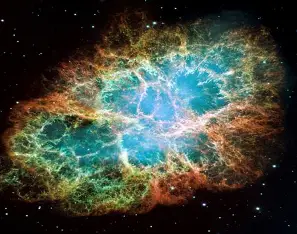
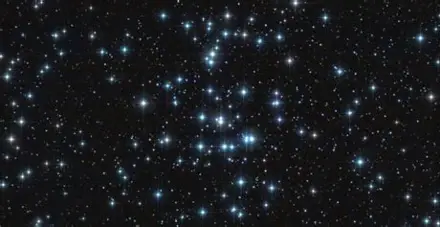
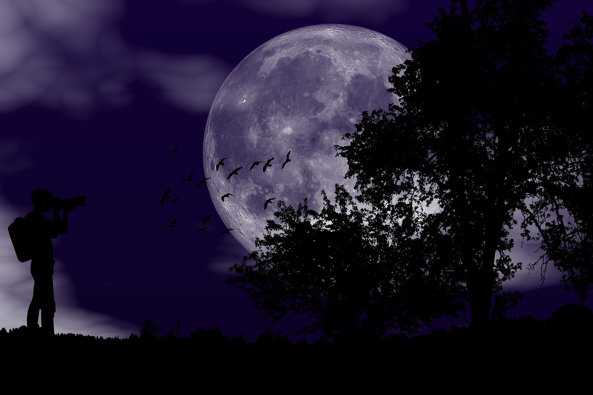
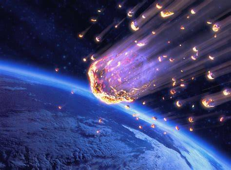
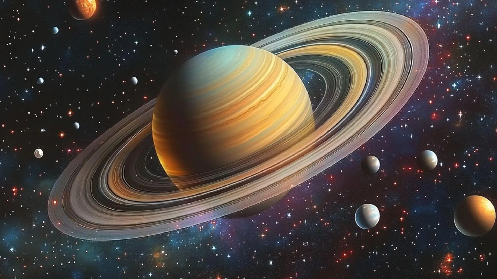
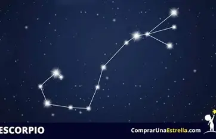
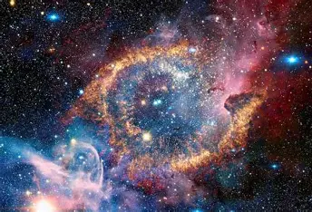

⭐ Colores
Las estrellas fugaces pueden mostrar diferentes colores según los minerales presentes en el meteorito:
- 💚 Verde: níquel o magnesio.
- 💛 Amarillo: sodio.
- 💙 Azul: magnesio.
- ❤️ Rojo: nitrógeno u oxígeno de la atmósfera.
Las estrellas fugaces pueden mostrar diferentes colores según los minerales presentes en el meteorito:
La mayoría de las estrellas fugaces son producidas por partículas diminutas, algunas incluso del tamaño de un grano de arena, que generan brillantes destellos al entrar en la atmósfera terrestre.
Algunos meteoros pueden viajar a más de 70 km por segundo, una velocidad mucho mayor que la de una bala.
A pesar de su nombre, las estrellas fugaces no son estrellas reales. Son pequeños fragmentos de roca o polvo espacial que se queman al atravesar la atmósfera terrestre.
La costumbre de pedir un deseo al ver una estrella fugaz existe desde hace siglos y forma parte de numerosas culturas alrededor del mundo.
Cada día la Tierra recibe toneladas de polvo y pequeños fragmentos espaciales, aunque la mayoría se desintegra antes de llegar al suelo.








Destello luminoso producido cuando un meteoro atraviesa la atmósfera.
Cuerpo celeste que gira alrededor de una estrella.
Unidad de distancia utilizada para medir enormes trayectos espaciales.
Nube de gas y polvo donde nacen nuevas estrellas.
Grupo gigantesco de estrellas, planetas y polvo cósmico.
Región del espacio donde la gravedad es tan intensa que ni la luz puede escapar.
Cuerpo de hielo y roca que deja una brillante cola al acercarse al Sol.
Instrumento que permite observar objetos muy lejanos en el espacio.
Explosión masiva que marca el final de la vida de algunas estrellas.
Rama de la ciencia que estudia el origen y evolución del universo.
Descubre algunos de los conceptos más fascinantes en terminos científicos
Rastro brillante que deja un meteoro al atravesar la atmósfera terrestre.
Fragmento de roca espacial que se ilumina al entrar en contacto con la atmósfera.
Todo lo que existe: galaxias, estrellas, planetas, materia, energía y espacio-tiempo.
Enorme esfera de gas que produce luz y calor mediante reacciones nucleares.
Cuerpo celeste que gira alrededor de una estrella y no emite luz propia.
Unidad utilizada para medir las enormes distancias del espacio.
Objeto que gira alrededor de un planeta, como la Luna alrededor de la Tierra.
Región del espacio donde la gravedad es tan intensa que ni la luz puede escapar.